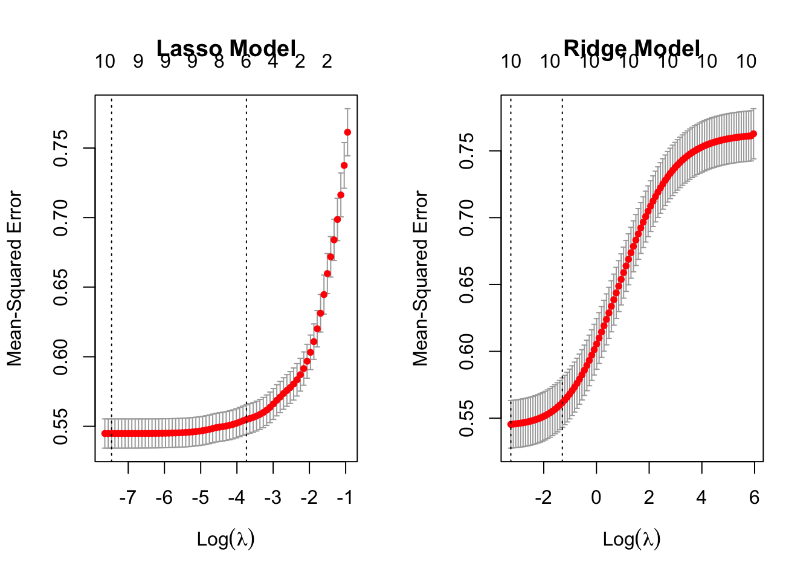

Please read the instructions carefully before submitting your assignment.
This assignment requires you to only upload a PDF file on Canvas
Don’t collapse any code cells before submitting.
Remember to make sure all your code output is rendered properly before uploading your submission.
⚠️ Please add your name to the author information in the frontmatter before submitting your assignment ⚠️
For this assignment, we will be using the Wine Quality dataset from the UCI Machine Learning Repository. The dataset consists of red and white vinho verde wine samples, from the north of Portugal. The goal is to model wine quality based on physicochemical tests
We will be using the following libraries:
library(readr)library(tidyr)library(dplyr)
Attaching package: 'dplyr'
The following objects are masked from 'package:stats':
filter, lag
The following objects are masked from 'package:base':
intersect, setdiff, setequal, union
library(purrr)library(car)
Loading required package: carData
Attaching package: 'car'
The following object is masked from 'package:purrr':
some
The following object is masked from 'package:dplyr':
recode
library(glmnet)
Loading required package: Matrix
Attaching package: 'Matrix'
The following objects are masked from 'package:tidyr':
expand, pack, unpack
Loaded glmnet 4.1-8
Question 1
50 points
Regression with categorical covariate and \(t\)-Test
1.1 (5 points)
Read the wine quality datasets from the specified URLs and store them in data frames df1 and df2.
Perform the following tasks to prepare the data frame df for analysis:
Combine the two data frames into a single data frame df, adding a new column called type to indicate whether each row corresponds to white or red wine.
Rename the columns of df to replace spaces with underscores
Remove the columns fixed_acidity and free_sulfur_dioxide
Convert the type column to a factor
Remove rows (if any) with missing values.
# add type columndf1 <- df1 %>%mutate(type ="white")df2 <- df2 %>%mutate(type ="red")# bind rowsdf <-bind_rows(df1, df2)# replace instances of "." with an underscorecolnames(df) <-gsub("\\.", "_", colnames(df))# remove columns fixed_acidity and free_sulfur_dioxidedf <-select(df, -fixed_acidity, -free_sulfur_dioxide)# convert type column to a factordf$type <-as.factor(df$type)# remove rows with missing valuesdf <-na.omit(df)dim(df)
[1] 6497 11
Your output to R dim(df) should be
[1] 6497 11
1.3 (20 points)
Recall from STAT 200, the method to compute the \(t\) statistic for the the difference in means (with the equal variance assumption)
Using df compute the mean of quality for red and white wine separately, and then store the difference in means as a variable called diff_mean.
Compute the pooled sample variance and store the value as a variable called sp_squared.
Using sp_squared and diff_mean, compute the \(t\) Statistic, and store its value in a variable called t1.
Equivalently, R has a function called t.test() which enables you to perform a two-sample \(t\)-Test without having to compute the pooled variance and difference in means.
Perform a two-sample t-test to compare the quality of white and red wines using the t.test() function with the setting var.equal=TRUE. Store the t-statistic in t2.
# filter for red and storered_only <- df %>%filter(type =="red")# filter for white and storewhite_only <- df %>%filter(type =="white")t_test <-t.test(white_only$quality, red_only$quality, var.equal =TRUE)t_test
Two Sample t-test
data: white_only$quality and red_only$quality
t = 9.6856, df = 6495, p-value < 2.2e-16
alternative hypothesis: true difference in means is not equal to 0
95 percent confidence interval:
0.1929301 0.2908436
sample estimates:
mean of x mean of y
5.877909 5.636023
t2 <- t_test$statistict2
t
9.68565
1.5 (5 points)
Fit a linear regression model to predict quality from type using the lm() function, and extract the \(t\)-statistic for the type coefficient from the model summary. Store this \(t\)-statistic in t3.
fit <-lm(quality ~ type, data = df) t3 <-coef(summary(fit))[, "t value"][2]t3
typewhite
9.68565
1.6 (5 points)
Print a vector containing the values of t1, t2, and t3. What can you conclude from this? Why?
c(t1, t2, t3)
t typewhite
9.68565 9.68565 9.68565
The t-statistics are all the same. 9.68 is also very large for a t-statistic, meaning it is significant.
—
Question 2
25 points
Collinearity
2.1 (5 points)
Fit a linear regression model with all predictors against the response variable quality. Use the broom::tidy() function to print a summary of the fitted model. What can we conclude from the model summary?
All of the p-values except the ones for citric_acid, total_sulfur_dioxide and are very low, indicating that most of the variables are statistically significant when predicting the quality of the wine.
2.2 (10 points)
Fit two simple linear regression models using lm(): one with only citric_acid as the predictor, and another with only total_sulfur_dioxide as the predictor. In both models, use quality as the response variable. How does your model summary compare to the summary from the previous question?
citric_model <-lm(quality ~ citric_acid, data = df)print(broom::tidy(citric_model))
Compute the variance inflation factor (VIF) for each predictor in the full model using vif() function. What can we conclude from this?
vif(regression_model)
volatile_acidity citric_acid residual_sugar
2.103853 1.549248 4.680035
chlorides total_sulfur_dioxide density
1.625065 2.628534 9.339357
pH sulphates alcohol
1.352005 1.522809 3.419849
type
6.694679
It seems to be that density and type have high multicollinearity that needs to be accounted for.
—
Question 3
40 points
Variable selection
3.1 (5 points)
Run a backward stepwise regression using a full_model object as the starting model. Store the final formula in an object called backward_formula using the built-in formula() function in R
full_model <- regression_modelbackward_model <-step(regression_model, scope =formula(regression_model), direction ="backward")
Run a forward stepwise regression using a null_model object as the starting model. Store the final formula in an object called forward_formula using the built-in formula() function in R
null_model <-lm(quality ~1, df)forward_model <-step(null_model, scope =formula(regression_model), direction ="forward")
lasso_model <-cv.glmnet(model_matrix, y, alpha =1)ridge_model <-cv.glmnet(model_matrix, y, alpha =0)
Create side-by-side plots of the ridge and LASSO regression results. Interpret your main findings.
par(mfrow=c(1, 2))plot(lasso_model, main ="Lasso Model")plot(ridge_model, main ="Ridge Model")

In the Lasso model, we see the MSE start to spike in between -4 and -3. In the Ridge model, we see the MSE spike slightly after -2, and then start to flatten out around 3.
3.4 (5 points)
Print the coefficient values for LASSO regression at the lambda.1se value? What are the variables selected by LASSO?
Store the variable names with non-zero coefficients in lasso_vars, and create a formula object called lasso_formula using the make_formula() function provided in the Appendix.
lasso_coefficients <-coef(lasso_model, s ="lambda.1se")print(lasso_coefficients)
11 x 1 sparse Matrix of class "dgCMatrix"
s1
(Intercept) 5.818377713
volatile_acidity -0.200241873
citric_acid .
residual_sugar 0.053806593
chlorides .
total_sulfur_dioxide -0.004254482
density .
pH 0.001045255
sulphates 0.064817269
alcohol 0.374936682
type .
Print the coefficient values for ridge regression at the lambda.1se value? What are the variables selected here?
Store the variable names with non-zero coefficients in ridge_vars, and create a formula object called ridge_formula using the make_formula() function provided in the Appendix.
ridge_coefficients <-coef(ridge_model, s ="lambda.1se")print(ridge_coefficients)
11 x 1 sparse Matrix of class "dgCMatrix"
s1
(Intercept) 5.85377080
volatile_acidity -0.15973580
citric_acid 0.02257425
residual_sugar 0.08380886
chlorides -0.04784706
total_sulfur_dioxide -0.03904363
density -0.08260927
pH 0.02328926
sulphates 0.07617805
alcohol 0.25202469
type -0.04694751
What is the difference between stepwise selection, LASSO and ridge based on you analyses above?
Stepwise selection adds or removes predictors one at a time, and retests Sum of Squares, RSS, and AIC one at a time, until it achieves optimal results. LASSO penalizes sum of squared coefficients and forces certain coefficients to zero. Ridge also penalizes large coefficients, but will not force coefficients to zero like LASSO.
—
Question 4
70 points
Variable selection
4.1 (5 points)
Excluding quality from df we have \(10\) possible predictors as the covariates. How many different models can we create using any subset of these \(10\) coavriates as possible predictors? Justify your answer.
To calculate this, we can use 2 to the power of n, where n is the number covariates. This gives us 2 raised to the power of 10. This equals 1024.
4.2 (20 points)
Store the names of the predictor variables (all columns except quality) in an object called x_vars.
x_vars <-colnames(df %>%select(-quality))
Use:
the combn() function (built-in R function) and
the make_formula() (provided in the Appendix)
to generate all possible linear regression formulas using the variables in x_vars. This is most optimally achieved using the map() function from the purrr package.
Use map() and lm() to fit a linear regression model to each formula in formulas, using df as the data source. Use broom::glance() to extract the model summary statistics, and bind them together into a single tibble of summaries using the bind_rows() function from dplyr.
models <-map(formulas, ~lm(.x, data = df))summaries <-map(models, broom::glance)single_tibble =bind_rows(summaries)
4.4 (5 points)
Extract the adj.r.squared values from summaries and use them to identify the formula with the highest adjusted R-squared value.
get_arsv <-function(formula, df){ arsv_model <-lm(formula, data = df)return(summary(arsv_model)$adj.r.squared)}adj_r_squared <-sapply(summaries, get_arsv)
Store resulting formula as a variable called rsq_formula.
quality ~ volatile_acidity + residual_sugar + chlorides + density +
pH + sulphates + alcohol + type
Are aic_formula and rsq_formula the same? How do they differ from the formulas shortlisted in question 3?
These formulas are not the same. The rsq formula is very short compared to those in question 3, as it is just one term. In regard to the amount of terms, the aic_formula is closer to the formulas from question 3, although it is still smaller.
Which of these is more reliable? Why?
The AIC formula will be more reliable. This is because the R squared formula has a higher AIC, meaning it will have worse predictive accuracy.
If we had a dataset with \(10,000\) columns, which of these methods would you consider for your analyses? Why?
I would consider the LASSO formula. This is because the LASSO model will force many coefficients to zero, and slim down the very large variable pool.
4.7 (10 points)
Use map() and glance() to extract the sigma, adj.r.squared, AIC, df, and p.value statistics for each model obtained from final_formulas. Bind them together into a single data frame summary_table. Summarize your main findings.
All of the formulas have similar r-squared. The second to last formula is the only outlier with an r-squared that is much lower than the rest. Each of the formulas also has a very similar AIC, however the second to last formula has a higher AIC than the rest. Most of the formulas have a df of 6, 8 or 10. However, the second to last formula has a df of 1.
—
Appendix
Convenience function for creating a formula object
The following function which takes as input a vector of column names x and outputs a formula object with quality as the response variable and the columns of x as the covariates.
make_formula <-function(x){as.formula(paste("quality ~ ", paste(x, collapse =" + ")) )}# For example the following code will# result in a formula object# "quality ~ a + b + c"make_formula(c("a", "b", "c"))
Convenience function for glmnet
The make_model_matrix function below takes a formula as input and outputs a rescaled model matrix X in a format amenable for glmnet()